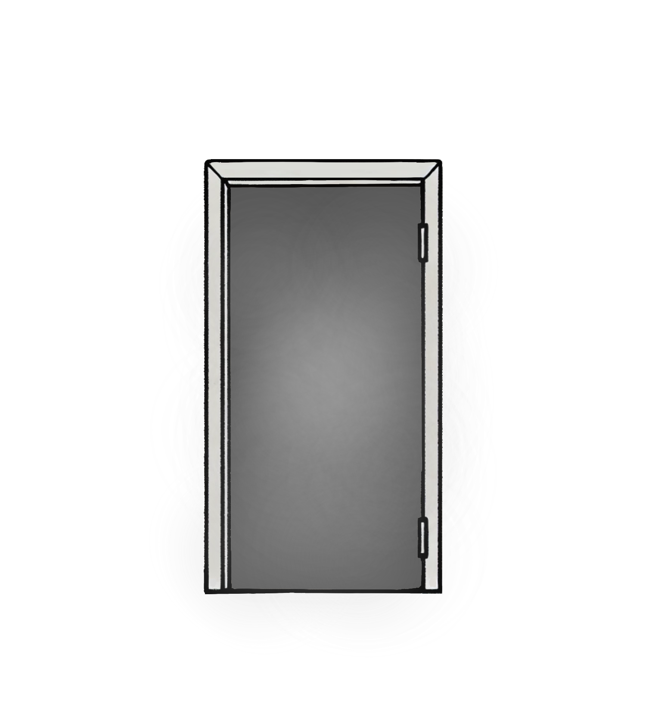
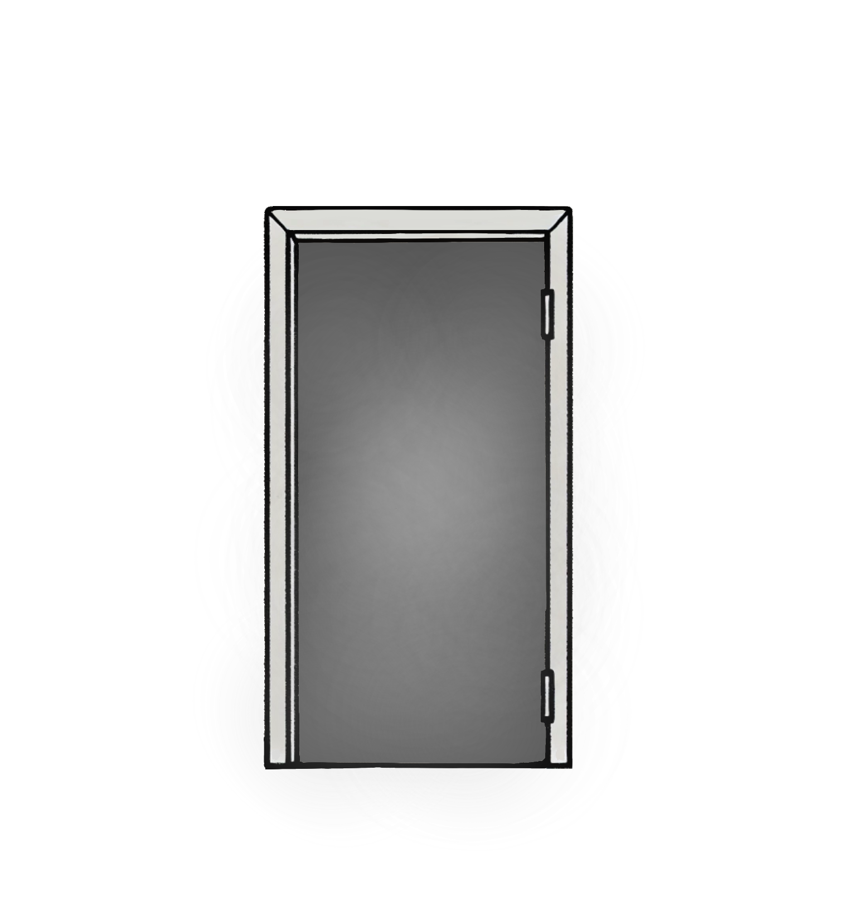

小標
在自我展示成為常態的時代，我們或許都曾在某一刻，定格在那片冷冽的反光中，端詳自己的面孔，試圖尋找些什麼，也許是美，也許是缺陷。然而，我們真正尋找的，是滿足社會期待的完美形象，還是某種讓自己安心的確認：「我看起來還不錯吧？」
但在那追尋的過程中，有些人開始迷失在鏡像、影像與現實之間，容貌焦慮便從這樣的縫隙中悄然滋生。它不是簡單的對外貌的關注，而是像黑霧般的焦慮，逐漸吞噬對自我的認同感。
容貌焦慮，是當我們無法從鏡子裡看見真實的自己，而只能看到他人與自我期待的樣貌時，心底所泛起的恐懼。
猶如一面破碎的鏡子，將裂痕映射在臉上，讓每一個不完美的角落變得無比尖銳，時不時扎進心房。


 
